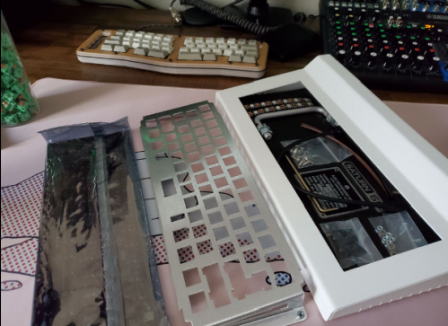
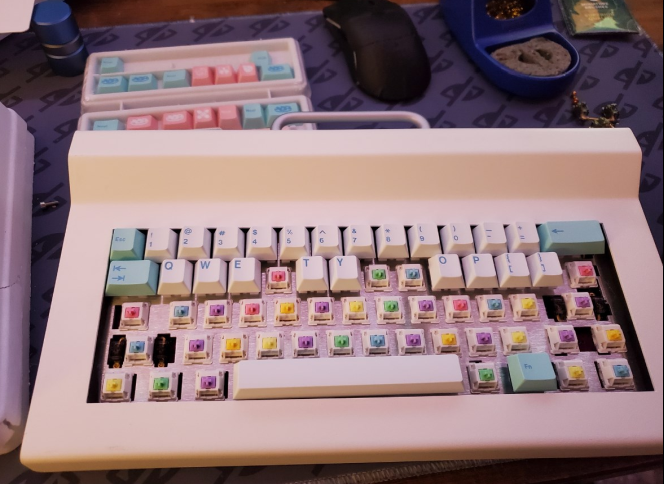
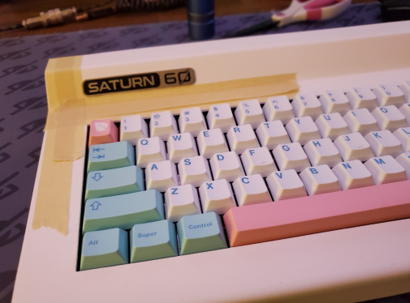
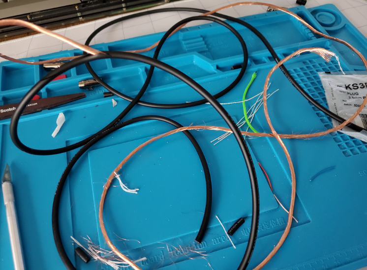
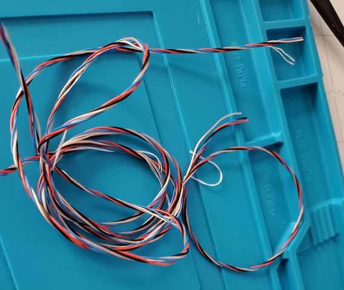
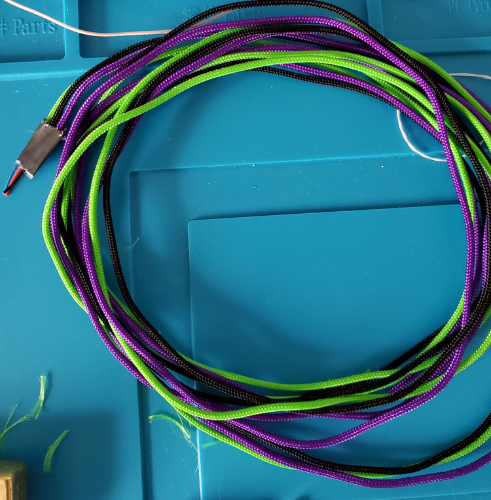
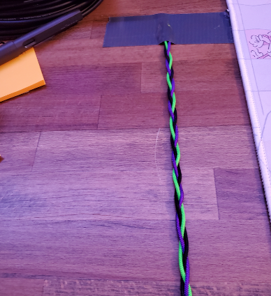
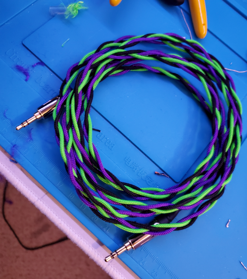
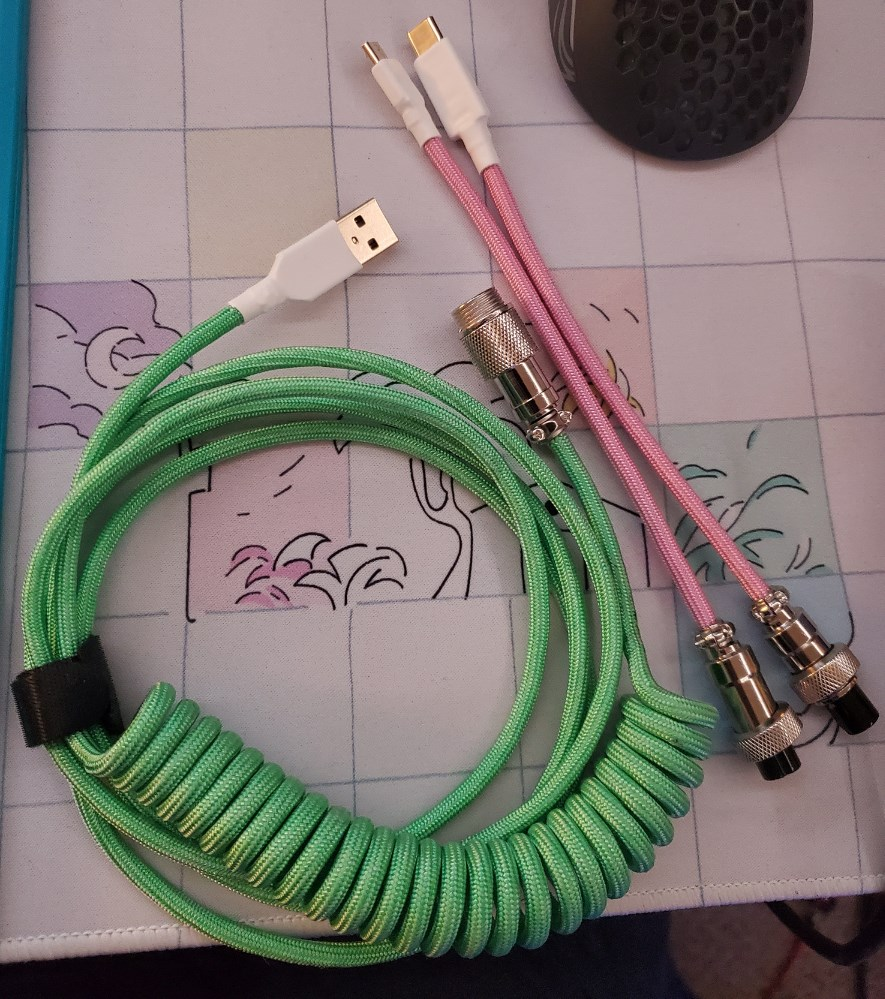
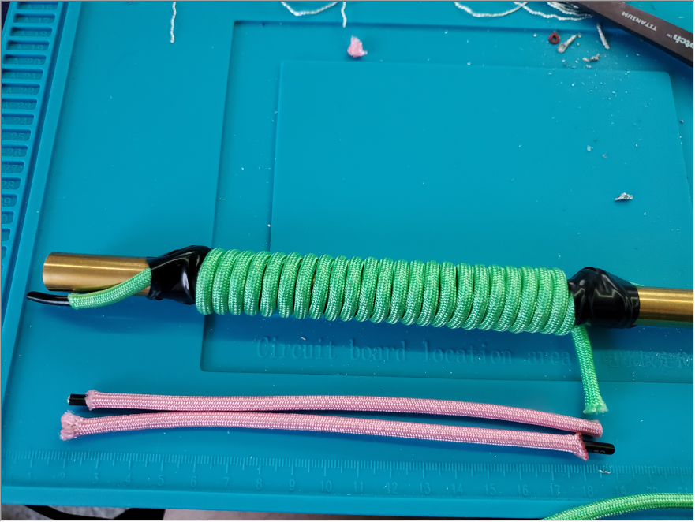

I received the Saturn60 keyboard kit after about a year from ordering.
It took longer than normal to ship due to COVID delays and PCB fabrication errors.
There was an ortholinear option, and a staggered (normal). I opted for the staggered option.
I'll provide a quick timeline from order to me actually building the keyboard below.
Date
Time
Action
October 16th, 2020
2:25PM
Ordered Saturn60
September 10th, 2021
12:44PM
Saturn60 delivered
October 8th, 2021
5:14AM
Saturn60 fully assembled

Building the Keyboard
My Saturn60 was built with Novelkey Silk Switches (a recoloring of JWK Linears) and Durock
screw-in stabilizers. The switches were lubricated with Krytox 205g0 and the springs were
bag lubed with GPL-106 oil. The stabilizers were holee-modded and then lubed with krytox 205g0.
The keyset I initially used was GMK Noel, but I ended up switching it out with MT3 BoW (Black on White)
The build was alright, and it was my first keyboard which used gaskets as the main mounting
mechanism. It was much heavier than I thought it would be (around 6lbs). The only issue I had
was relating to the positioning of the plate. I had to gently force the plate into position after
the keyboard was mostly built in order to put the keycaps on properly.

Finishing Up

In the end, I had to put on the adhesive badge to finish the keyboard, I used masking tape
to make sure that the badge wasn't crooked in any way, as the adhesive is nigh impossible to remove
after its initial application.
Final Result
I'm just really a big fan of the design of this board, I don't really have much else to say. It's one of my favorites. It's
definitely one of the more unique looking ones in comparison to the myriad of others I've seen in various keyboard communities.
A little rundown on some of the cables I've made in the past.
My first braided cable
Looking back on it, it was mostly a disaster. The whole process took me around 5 to 6 hours
and I ended up putting on less paracord than I needed, so I had to use extra heatshrink to hide
the mistake, which didn't help the look of the cable. It was a fun project, however. I would
definitely choose less bold colors next time.
Stripping the Sleeving
The first step to making a coiled cable was actually stripping the rubber sleeving, copper shielding, and paper to get to the
individual wires that you must then sleeve with your paracord of choice. (I used Paracord 250 and Mogami 2564 wire).


Sleeving and Braiding
sleeving is one of the most time consuming parts of making cables, but the final result is almost always worth the effort.
I had decided to go with purple and green for this (my favorite colors). I unfortunately didn't account for the fact that this
color choice would mean that it would fit with almost none of my headphones without looking extremely out of place.


Final Result
I obviously had to hide the heatshrink job when taking the final picture, so it looks better here than it does if you scrutinize
it. Overall, it was a learning experience and I will definitely tackle the process differently next time I make one.

A coiled keyboard cable for a friend
My friend asked me to make him a cable for his keyboard. He was going for a certain theme and wanted
something to match it, so I obliged.

He wanted pink and green as the main colors, and asked if I could make it swappable between
micro-usb and usb-c, in case he gets a keyboard with micro-usb. It was a fairly simple process,
besides the coiling (multiple runs with a heat gun).

Overall, I think the final result was pretty good. The electrical tape marred the green a bit, but I managed
to remove the residual adhesive with tape. I'm personally not a big fan of the
color scheme. I wasn't making the cable for myself, however, and my friend was stoked to receive it.
A few short RCA runs for my amp and DAC
I recently got a new DAC and amp in the mail, and after 3D printing some mounts to keep them out of the way,
I made some short RCA runs to avoid extra cable clutter under my desk.